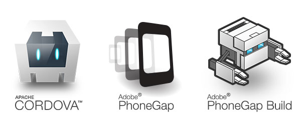

PhoneGap for GDI Neo Hack
Julee Burdekin
@adobejulee
Adobe Web Platform Team Mission:
Create a more expressive web.
- Learn from customers, designers and tool makers
- Creative vision ≠ real-world possibility
- Improve client-side technology: HTML, CSS, SVG
What is PhoneGap Build?
What is PhoneGap?

- Free and open source framework
- Create mobile apps using the web technologies
- Use standardized web APIs
- Target the platforms you care about